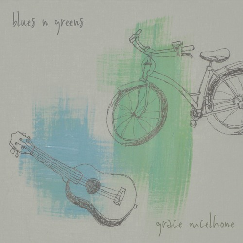

Grace McElhone
Kalamazoo
Blues and Greens

produced by Amber Zundel
mastered by Joe Salmon
Featuring Bre Bowen, Jon DeGroot, and a small chorus comprised of some beautiful friends of mine.
Release date:
19 September 2018
Hello Whoever
info...